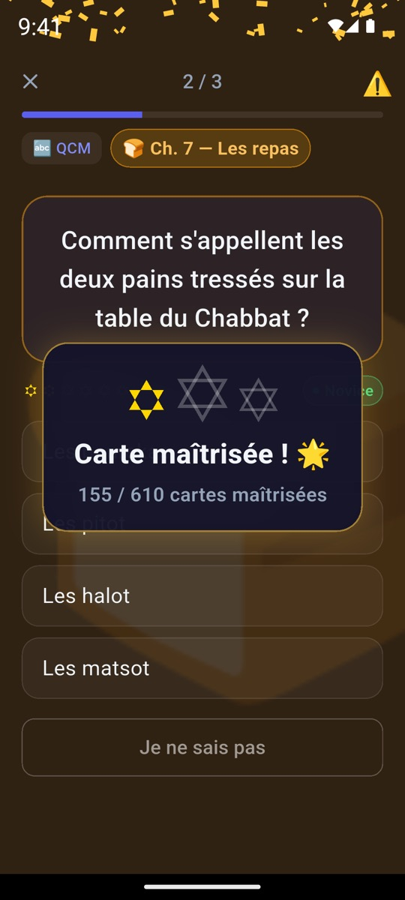
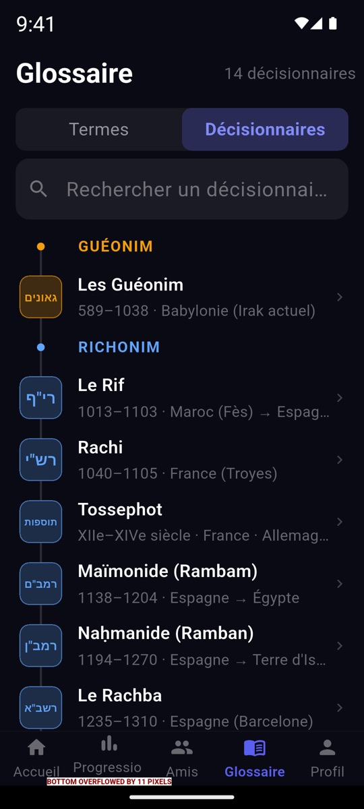

Les halakhot du Pninei Halakha en cartes courtes : QCM, Vrai/Faux et cas pratiques, révisés au bon moment pour ne plus les oublier.
Gratuit · Sans publicité · Fonctionne hors ligne
Android sans Google Play ? Télécharger l'APK


La répétition espacée ramène chaque carte juste avant que vous l'oubliiez. 3 bonnes réponses espacées = carte maîtrisée.
5, 10 ou 20 cartes par jour. On commence par les plus simples, la difficulté monte toute seule.
Chaque réponse explique le « pourquoi » et donne la référence dans le livre.
Une illustration qui se colore au fil des étoiles, des badges par chapitre et une célébration à chaque carte maîtrisée.
Classement de la semaine, défi commun et badges de communauté.
L'app se met en pause pendant Chabbat et les fêtes, aux horaires réels de votre ville. La série n'est jamais cassée.
Les termes halakhiques de A à Z et une frise des grands décisionnaires, des Guéonim aux contemporains.
Questions rédigées à partir du Pninei Halakha – Chabbat, avec le chapitre et le paragraphe pour vérifier.
Gratuit, sur iPhone et Android.